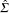
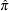
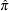
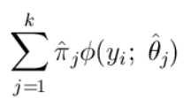
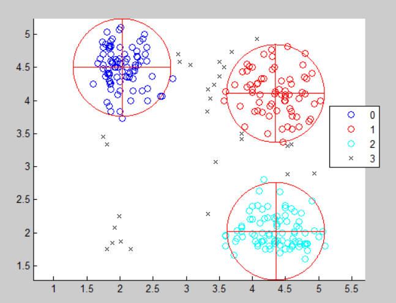
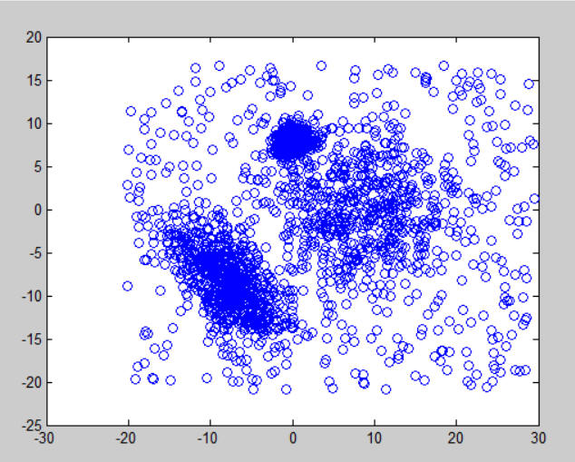
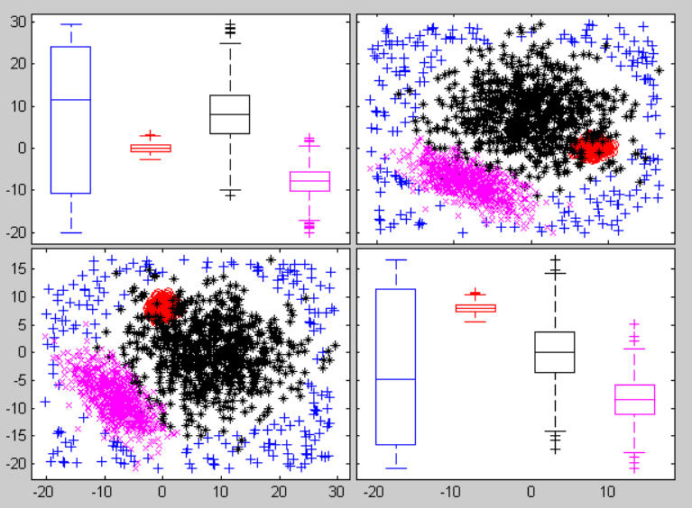
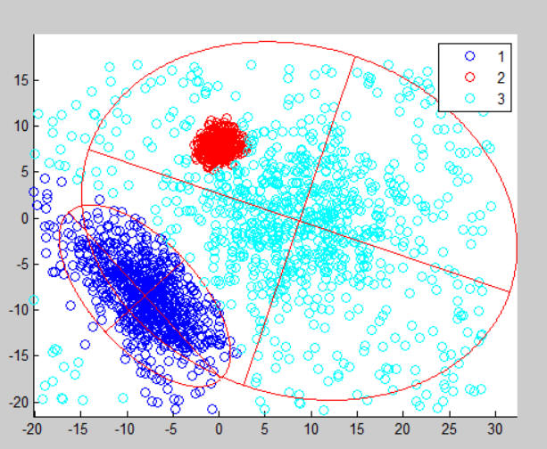

| Flexible Statistics Data Analysis Toolbox™ | |
| Provide feedback on FSDA toolbox |
tclust computes trimmed clustering
[out] = tclust(Y,k,alpha,restrfactor)
[out] = tclust(Y,k,alpha,restrfactor,param1,val1,param2,val2,...)
[out , varargout] = tclust(Y,k,alpha,restrfactor,param1,val1,param2,val2,...)
Several “mixture modeling” and “crisp clustering” approaches to model-based Clustering can be found in the literature. Mixture modeling approaches assume that data at hand y1,...,yn in Rv come from a probability distribution with density ∑j=1kπjϕ(⋅,θj) with ϕ(⋅,θj) being the v-variate (generally multivariate normal) densities with parameters θj, j = 1,…,k. Generally θj = (μj,Σj) where μj is the population mean and Σj is the covariance matrix for component j. This leads to likelihoods of the form
 | (1) |
On the other hand, “crisp” (0-1) clustering approaches assume classification likelihoods of the following form
|
| (2) |
where Rj contains the indexes of the observations which are assigned to group j, with the constraint that #⋃ j=1kRj = n. In optional parameter mixt the user can specify he wants to maximize (1) or (2).
In order to discard a fraction of most outlying observations (say equal to α) and to take into account the different sizes of the groups when making the final group assignments, García-Escudero et al. (2008) suggested to maximize the following expression (tclust):
 | (3) |
with the constraint that #⋃
j=1kRj = [n(1-α)] where symbol [⋅] denotes the integer part.
Parameter equalweights below controls whether equation (2) or equation (3) is
used in the maximization. Pararmeter α is controlled by input argument
alpha. Note that in equation (3) we have used symbol π′j to stress that these parameters have a
completely different interpretation from the πj in equation (1). They are intended to take
into account the different sizes of the groups when making the final group assignments
and they are not the weights of the mixture likelihood. TCLUST method also considers
scatter constraints in terms of the group covariance matrices. More specifically, if λl(j)
(l = 1,…,v; j = 1,…,k) are the estimated eigenvalues of the group covariance
matrix  j, TCLUST in each iteration of the maximization routine
calls routine restreigen and imposes the
constraint:
j, TCLUST in each iteration of the maximization routine
calls routine restreigen and imposes the
constraint:
|
| (4) |
Note that classic k-means procedure is simply obtained putting α = 0 and π′j = 1 in
equation (3) and c = 1 in equation (4). The idea of trimming under the eigenvalue
constraint ratio of equation (4) can also be applied in the context of the mixture likelihood
(see option mixt below) given in equation (1) with important consequences. In the crisp assignment in each
iteration of the maximization process, the selection of the [n(1-α)] units is made taking
the [n(1-α)] largest values of ϕi*, where ϕi* = maxj=1,…,k ′jϕ(yi;
′jϕ(yi;
 j) where
j is
estimated using proportion of untrimmed observations which are assigned to each group.
Estimates of centers and the covariance matrices use respectively the unweighted sample
mean and sample covariance matrices. On the other hand, in the context of mixture
modelling, the quantities
j) where
j is
estimated using proportion of untrimmed observations which are assigned to each group.
Estimates of centers and the covariance matrices use respectively the unweighted sample
mean and sample covariance matrices. On the other hand, in the context of mixture
modelling, the quantities
are interpreted as posterior probabilities. The criterion for selecting the units to trim
remains the same, however, centers and the covariance matrices are updated with
the weighted sample mean and weighted sample covariance matrices with the
weights given by the posterior probabilities. The posterior probabilities for the α
trimmed units are set to 0 for each group. Similarly, the
 j are updated using
∑i=1nϕij*∕[n(1-α)].
j are updated using
∑i=1nϕij*∕[n(1-α)].
DETAILS. This iterative algorithm initializes k clusters randomly and performs "concentration steps" in order to improve the current cluster assignment. The number of maximum concentration steps to be performed is controlled by input parameter refsteps. For approximately obtaining the global optimum, the system is initialized nsamp times and concentration steps are performed until convergence or refsteps is reached. When processing more complex data sets higher values of nsamp and refsteps have to be specified (obviously implying extra computation time). However, if more then 10% of the iterations do not converge, a warning message is issued, indicating that nsamp has to be increased.
tclust requires the following input
Y | Y matrix of size n-by-v containing (in the columns) the variables of the dataset. Rows of Y represent observations, and columns represent variables. Missing values (NaN's) and infinite values (Inf's) are allowed, since observations (rows) with missing or infinite values will automatically be excluded from the computations. |
k |
Scalar which specifies the number of groups |
|
Scalar (real) between 0 and 0.5 or an integer specifying the number of observations which have to be trimmed. If alpha=0 tclust reduces to traditional model based or mixture clustering (mclust): see Matlab function gmdistribution. More in detail, if 0< alpha <0.5 clustering is based on h=fix(n*(1-alpha)) observations Else if alpha is an integer greater than 1 clustering is based on h=n-floor(alpha); | |
restr |
Scalar in the interval [1 ∞] which specifies the maximum ratio to allow between the largest eigenvalue and the smallest eigenvalue of the k covariance matrices which are generated (see equation (4) above). Setting restr to 1, yields the strongest restriction, forcing all eigenvalues/determinants to be equal and so the method looks for similarly scattered (respectively spherical) clusters. |
[out] = tclust(Y,k,alpha,restrfactor) returns the following information
idx − n-by-1 vector containing assignment of each unit to each of the k groups. Cluster names are integer numbers from 1 to k. 0 indicates trimmed observations.
muopt − k-by-v matrix containing cluster centroid locations. These are robust estimate of final centroids of the groups.
sigmaopt − v-by-v-by-k array containing estimated constrained
covariances for the k groups.
bs − k-by-1 vector containing the units forming initial subset associated with muopt
[out , C] = tclust(Y,k,alpha,restrfactor) returns in matrix C (with size nsamp-by-(v+1)*k) the indices of the subsamples extracted for computing the estimate. First row is associated to first subsample, ...., last row is associated with nsamp subsample
[out] = tclust(Y,k,alpha,restrfactor,param1,val1,param2,val2,...) specifies one or more of the name/value pairs described in the following table.
| Parameter | Value |
|---|---|
| 'nsamp' | Scalar of matrix. |
| 'refsteps' | Scalar defining number of refining iterations in each subsample (default = 15). |
| 'reftol' | Scalar. Default value of tolerance for the refining steps. The default value is 1e-14; |
| 'equalweights' | A logical value specifying whether cluster
weights shall be considered in the concentration, assignment steps and
computation of the likelihood. |
| 'mixt' | Scalar, which specifies whether mixture modelling
or crisp assignment approach to model based clustering must be used. If mixt ≥ 1 mixture modelling is assumed else crisp assignment
is used. Remark: if mixt>=1 previous parameter
equalweights is automatically set to 1 
|
| 'plots' | Scalar. If plots = 1, a plot with the classification is shown on the screen. |
| 'msg' | Scalar which controls whether to display or not
messages on the screen |
| 'nocheck' | Scalar. If nocheck is equal to 1 no check is
performed on |
| 'startv1' | Scalar. If startv1 is 1 then initial centroids and
and covariance matrices are based on (v+1) observations randomly
chosen, else each centroid is initialized taking a random row of input
data matrix and covariance matrices are initialized with identity
matrices.
|
| 'Ysave' | Scalar that is set to 1 to request that the input matrix Y is saved into the output structure out. Default is 0, i.e. no saving is done. |
Garcia-Escudero, L.A.; Gordaliza, A.; Matran, C. and Mayo-Iscar, A.
(2008), "A General Trimming Approach to Robust Cluster Analysis". Annals of
Statistics, Vol.36, 1324-1345. Technical Report available at
www.eio.uva.es/inves/grupos/representaciones/trTCLUST.pdf
tclust applied to geyser data
% tclust using geyser data
Y=load('geyser2.txt');
out=tclust(Y,3,0.1,10000,'plots',1)

Compare the above solution with the trimmed k-means solution
% trimmed k-means solution restrfactor=1 out=tclust(Y,3,0.1,1,'nsamp',100,'refsteps',20,'plots',1)

Analysis of the M5 data. This is a bivariate data set obtained from three normal bivariate distributions with different scales and proportions 1:2:2. One of the components is very overlapped with another one. A 10% background noise is added uniformly distributed in a rectangle containing the three normal components and not very overlapped with the three mixture components. A precise description of the M5 data set can be found in García-Escudero et al. (2008).
Y=load('M5data.txt');
plot(Y(:,1),Y(:,2),'o')
spmplot(Y(:,1:2),Y(:,3),[],'box')
out=tclust(Y(:,1:2),3,0,1000,'nsamp',100,'plots',1)
Plot of the data without labels

Plot of the data with labels

Output of tclust

| Provide feedback on FSDA toolbox |
| |
fscolors.html | fsmbbm.html | |